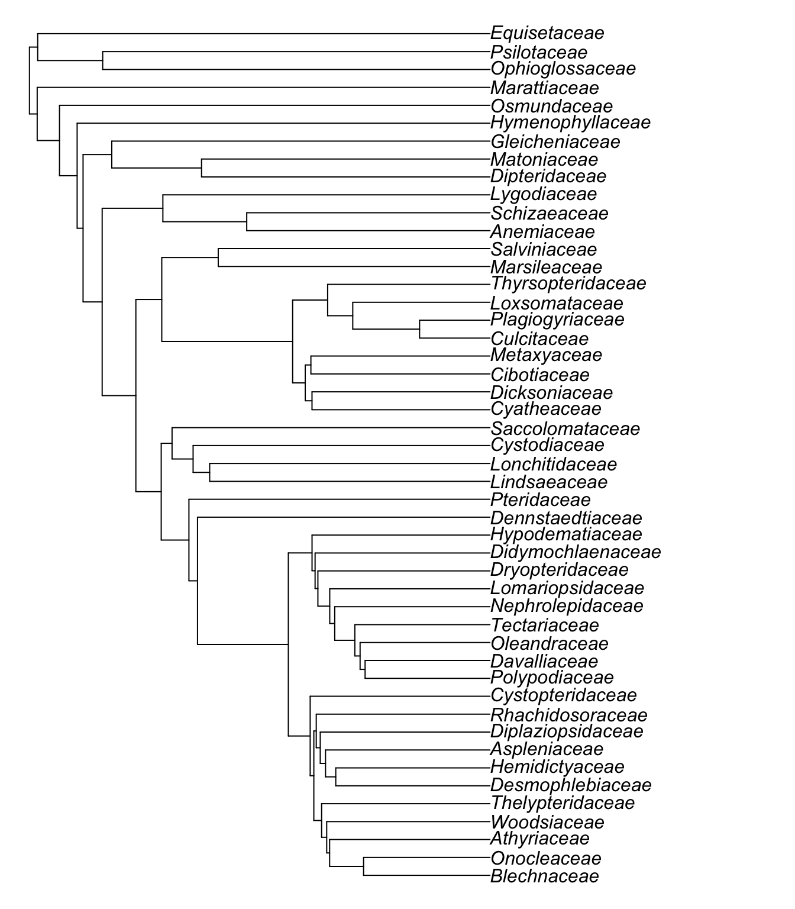

# Load packages
library(tidyverse)
library(ftolr)
library(ape)
library(MonoPhy)
library(assertr)
# Check FTOL version and cutoff date
ft_data_ver()[1] "1.5.0"ft_data_ver("cutoff")[1] "2023-06-15"# Load ultrametric fern tree, drop outgroup
phy <- ft_tree(branch_len = "ultra", rooted = TRUE, drop_og = TRUE)
# Inspect:
phy
Phylogenetic tree with 5750 tips and 5749 internal nodes.
Tip labels:
Acrostichum_danaeifolium, Acrostichum_speciosum, Acrostichum_aureum, Ceratopteris_richardii, Ceratopteris_cornuta, Ceratopteris_pteridoides, ...
Node labels:
100/100, 100/100, 100, 100/100, 100, 90/100, ...
Rooted; includes branch lengths.# Load fern taxonomy
taxonomy <- ftol_taxonomy %>%
# Subset to only species in tree
filter(species %in% phy$tip.label)
# Inspect:
taxonomy# A tibble: 5,750 × 8
species genus subfamily family suborder order major_clade outgroup
<chr> <chr> <chr> <chr> <chr> <chr> <chr> <lgl>
1 Acrostichum_danaeifolium Acrostichum Parkerioideae Pteridaceae Pteridineae Polypodiales Pteridineae FALSE
2 Actiniopteris_dimorpha Actiniopteris Pteridoideae Pteridaceae Pteridineae Polypodiales Pteridineae FALSE
3 Actiniopteris_semiflabellata Actiniopteris Pteridoideae Pteridaceae Pteridineae Polypodiales Pteridineae FALSE
4 Actiniopteris_australis Actiniopteris Pteridoideae Pteridaceae Pteridineae Polypodiales Pteridineae FALSE
5 Actiniopteris_radiata Actiniopteris Pteridoideae Pteridaceae Pteridineae Polypodiales Pteridineae FALSE
6 Onychium_cryptogrammoides Onychium Pteridoideae Pteridaceae Pteridineae Polypodiales Pteridineae FALSE
7 Onychium_moupinense Onychium Pteridoideae Pteridaceae Pteridineae Polypodiales Pteridineae FALSE
8 Onychium_japonicum Onychium Pteridoideae Pteridaceae Pteridineae Polypodiales Pteridineae FALSE
9 Onychium_lucidum Onychium Pteridoideae Pteridaceae Pteridineae Polypodiales Pteridineae FALSE
10 Onychium_plumosum Onychium Pteridoideae Pteridaceae Pteridineae Polypodiales Pteridineae FALSE
# ℹ 5,740 more rows# Analyze monophyly of each family
family_mono_test <- AssessMonophyly(
phy,
as.data.frame(taxonomy[, c("species", "family")])
)
# Check that all families are monophyletic or monotypic
family_mono_summary <-
family_mono_test$family$result %>%
rownames_to_column("family") %>%
as_tibble() %>%
assert(in_set("Yes", "Monotypic"), Monophyly)
# Inspect:
family_mono_summary# A tibble: 48 × 9
family Monophyly MRCA `#Tips` `Delta-Tips` `#Intruders` Intruders `#Outliers` Outliers
<chr> <chr> <chr> <chr> <chr> <chr> <chr> <chr> <chr>
1 Pteridaceae Yes 5760 897 0 0 "" NA ""
2 Polypodiaceae Yes 6666 935 0 0 "" NA ""
3 Davalliaceae Yes 7600 42 0 0 "" NA ""
4 Oleandraceae Yes 7641 10 0 0 "" NA ""
5 Tectariaceae Yes 7650 138 0 0 "" NA ""
6 Nephrolepidaceae Yes 7787 19 0 0 "" NA ""
7 Lomariopsidaceae Yes 7805 44 0 0 "" NA ""
8 Dryopteridaceae Yes 7848 984 0 0 "" NA ""
9 Didymochlaenaceae Yes 8831 9 0 0 "" NA ""
10 Hypodematiaceae Yes 8839 26 0 0 "" NA ""
# ℹ 38 more rows# Get one exemplar tip (species) per family
rep_tips <-
taxonomy %>%
group_by(family) %>%
slice(1) %>%
ungroup()
# Subset phylogeny to one tip per family
phy_family <- ape::keep.tip(phy, rep_tips$species)
# Relabel with family names
new_tips <-
tibble(species = phy_family$tip.label) %>%
left_join(rep_tips, by = "species") %>%
pull(family)
phy_family$tip.label <- new_tips
# Visualize tree
plot(ladderize(phy_family), no.margin = TRUE)